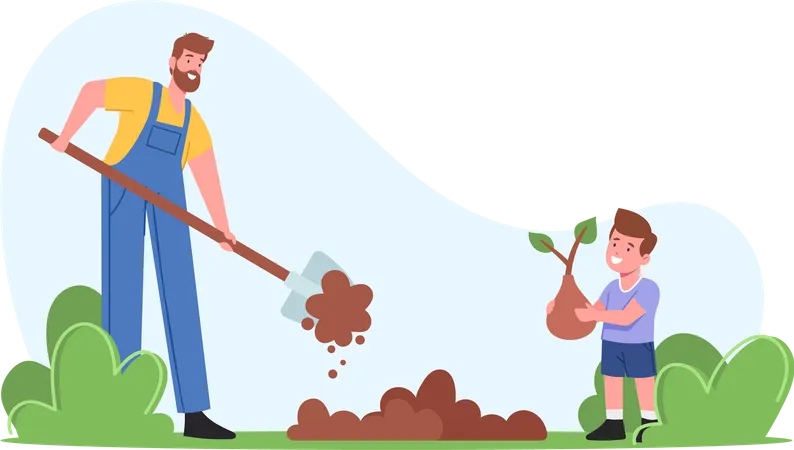

Transform your farming practices with fun, engaging challenges
Join thousands of farmers who are revolutionizing agriculture through gamified learning, sustainable practices, and community-driven growth.

Everything you need to transform your farming
Our platform combines modern technology with traditional farming wisdom to create an engaging learning experience.
Interactive Challenges
Complete fun farming challenges that teach sustainable practices while earning points and badges.
Progress Tracking
Monitor your farming improvements with detailed analytics and sustainability metrics.
Community Network
Connect with fellow farmers, share experiences, and learn from successful sustainable practices.
Real Rewards
Earn government scheme benefits, training credits, and marketplace discounts for your achievements.
Smart Recommendations
Get personalized farming advice based on your location, crop type, and seasonal requirements.
Sustainability Impact
Track your environmental impact with detailed metrics on water savings, carbon reduction, and soil health.
Start your sustainable farming journey in 3 steps
Create Your Profile
Sign up and tell us about your farm, crops, and current practices to get personalized recommendations.
Complete Challenges
Take on farming challenges tailored to your needs, learn new sustainable techniques, and earn rewards.
Track Progress
Monitor your improvements, celebrate achievements, and unlock new opportunities for growth.
What farmers are saying
"This platform transformed how I approach farming. The challenges made learning fun, and I've increased my yield by 30% using sustainable methods."

"The community aspect is amazing. I've learned so much from other farmers and the rewards system motivates me to keep improving."

"Easy to use and very helpful. The personalized recommendations saved me time and money while improving my farming practices."

Ready to transform your farming?
Join thousands of farmers already using sustainable practices to improve their yields and protect the environment.